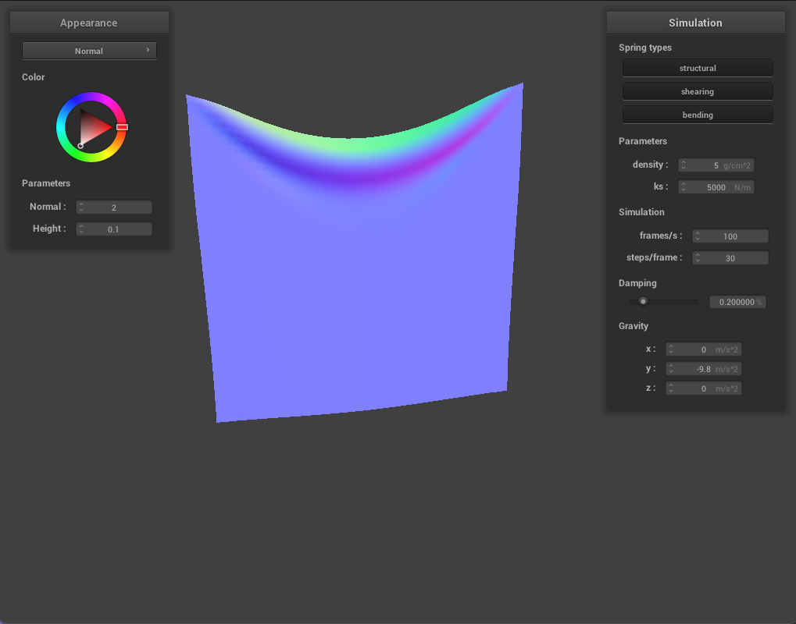
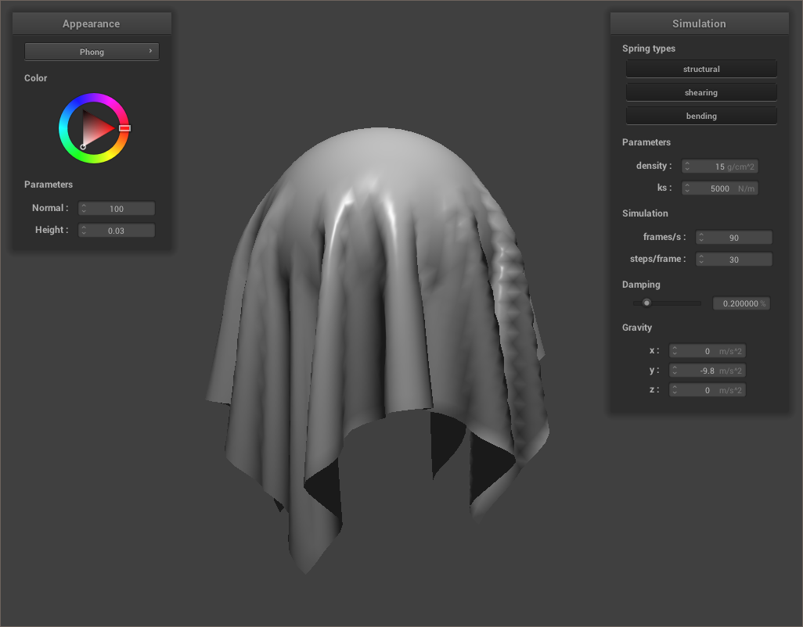
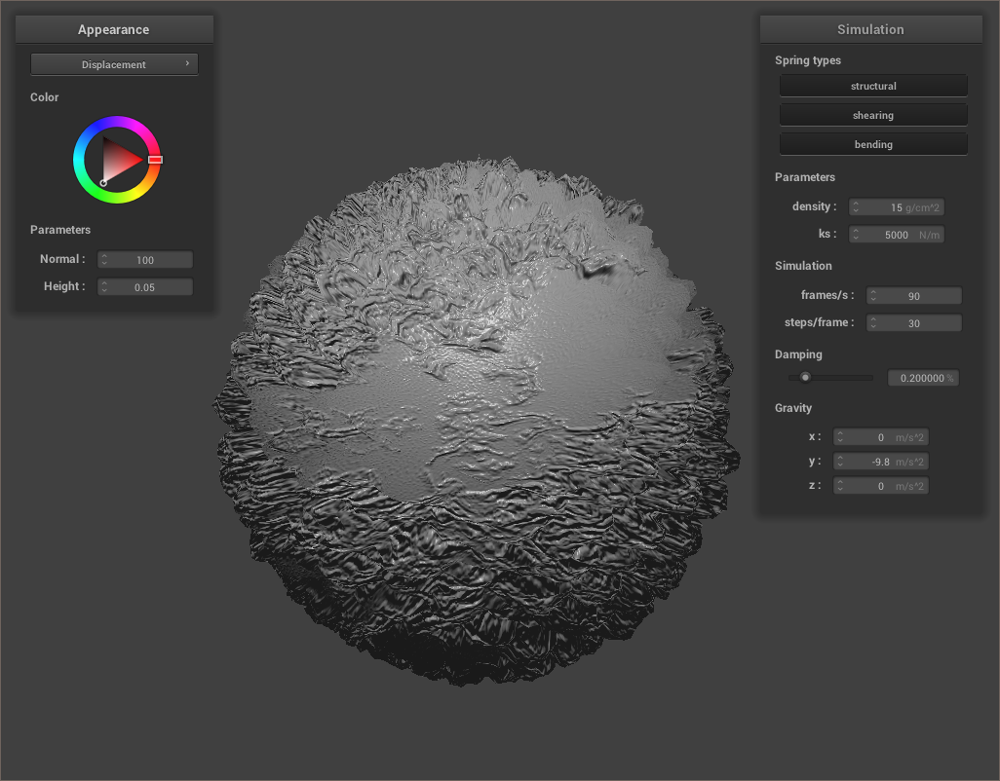

Overview
This project involved the implementation of a real-time cloth simulation
under physical constraints. In Part 1, a mass and spring grid was implemented
to serve as the structural mesh. Numerical integration was then used in order
to simulate the physical motions of the cloth’s point masses at different
points in time. Later, both self-collisions and collisions with other objects
were handled, opening the capability for a cloth to avoid self-collision as
well as collide with a sphere and a plane. The final part of the project
involved implementing shaders for the cloth material. Blinn-Phong and Diffuse
shading were among the tasks. Then, displacement and bump mapping
capabilities were added, adding the effect of bumpiness to our sphere and
cloth fabric. Overall, the project was relatively straightforward and was it
great to see the “results” of our changes more immediately rather than having
to wait for a render. This project also serves as a bit of inspiration for
our final group project.
Part 1: Masses and springs
Take some screenshots of scene/pinned2.json from a viewing angle where
you can clearly see the cloth wireframe to show the structure of your point
masses and springs.
Show us what the wireframe looks like (1) without any shearing constraints,
(2) with only shearing constraints, and (3) with all constraints.
|
(1) without any shearing constraints
|
(2) with only shearing constraints
|
|
(3) with all constraints
|
Part 2: Simulation via numerical integration
Experiment with some the parameters in the simulation. To do so, pause the
simulation at the start with P, modify the values of interest,
and then resume by pressing P again. You can also restart the
simulation at any time from the cloth's starting position by pressing
R. Describe the effects of changing the spring constant
ks; how does the cloth behave from start to rest with a very low
ks? A high ks? What about for density?
What about for damping? For each of the above, observe any
noticeable differences in the cloth compared to the default parameters and
show us some screenshots of those interesting differences and describe when
they occur.
Changing ks to be a higher value of 5000 N/m resulted in a cloth
that was visually more "stiff" based on the physics of how it unfolded.
Compared with another simulation with all parameters held constant except for
the ks value, now at 50 N/m, it's visually apparent that at rest, there is
more fluid draping for materials with a smaller spring constant. This makes
sense, as it's expected for there to be fewer forces acting between point
masses and, therefore, less rigidity between each point mass that allows the
cloth to fold and "ripple" more.
|
pinned2.json with ks = 50 N/m at resting state
|
pinned2.json with ks = 5000 N/m at resting state
|
Keeping all the other factors constant besides the density (g/cm^2), the
visual differences occur when the cloth is at resting state. When the fabric
has higher density, it shows more fluid draping/ripples versus the same cloth
with lower density, the same effect achieved when lowering the spring
constant. This makes sense as each point mass has mass proportional to the
density of a cloth. Given that F = m * a, an object with greater
mass or density will experience the effects of external accelerations that
cause it to flow/drape more.
|

pinned2.json with density = 5 g/cm^2 at resting state
|
 pinned2.json with density = 2500 g/cm^2 at resting state
pinned2.json with density = 2500 g/cm^2 at resting state
|
Finally, changing damping revealed visual differences in both
the active unfolding and resting states of the material. With zero damping,
the cloth fell fast and continued to ripple and sway, which makes sense as
there no adjustment constraints acting against the moving material. At 50%
damping, the cloth unfolded noticeably slower and came to a stop at the end
without any further oscillations. As shown below, at "resting" state, the 0%
damped material continues to move while the 50% damped material stays in
place, truly at rest.
|
pinned2.json with damping = 0% at "resting" state
|
pinned2.json with damping = 50% at "resting" state
|
Show us a screenshot of your shaded cloth from scene/pinned4.json in
its final resting state! If you choose to use different parameters than the
default ones, please list them.
The default parameters were used: 15 g/cm^2, 5000 N/m, and 20% damping.
|
pinned4 angle one
|
pinned4 angle two
|
Part 3: Handling collisions with other objects
Show us screenshots of your shaded cloth from scene/sphere.json in its final
resting state on the sphere using the default ks = 5000 as well
as with ks = 500 and ks = 50000. Describe the
differences in the results.
Shown below are the three different resting states of the cloth at spring
constants 500, 5000, and 50000 respectively. At as the spring constant
increases, the “draping” over the ball increases. For ks = 500, the cloth is
wrapped closer around the sphere because it is less rigid with less spring
force compared to when ks = 50000, where we see with strong spring force, the
cloth is more rigid and maintains it’s original, rectangular shape more. The
moving simulation also shows that for lower spring constants, the cloth
ripples and moves around more before settling to rest compared to higher
spring constants, consistent with observations we made above.
|
ks = 500
|
 ks = 5000
ks = 5000
|
|
ks = 50000
|
Show us a screenshot of your shaded cloth lying peacefully at rest on the
plane. If you haven't by now, feel free to express your colorful creativity
with the cloth! (You will need to complete the shaders portion first to show
custom colors.)
|
Wireframe
|
Normal
|
|
Texture
|
Custom
|
Part 4: Handling self-collisions
Show us at least 3 screenshots that document how your cloth falls and folds
on itself, starting with an early, initial self-collision and ending with the
cloth at a more restful state (even if it is still slightly bouncy on the
ground).
|
selfCollision.json at an initial self-collision
|
selfCollision.json mid-fall
|
|
selfCollision.json at rest
|
The following images show what happens when we vary ks and hold
density constant at $15$ $g/cm^2$. Most of the differences are apparent right
when the entire fabric is finished falling and is moving towards rest. With a
higher spring constant, we can expect a greater maintenance of the integrity
of the original rectangular material's shape. We can see this because with
lower ks, there's less definition/ volume of the folds of the
material. As we increase ks, we see that the material better
maintains its shape, evidenced by the more defined curvature of its folds.
|
$ks = 2500$ $N/m$
|
$ks = 7500$ $N/m$
|
The following images show what happens when we vary density and hold
ks constant at $5000$ $N/m$. With higher density, we can expect
there to be lower malleability of a material. With higher density, we see
greater maintenance of its curving folds and there's less spread of of the
material over the plane. At lower densities, the has fewer folding curves
and the material covers more surface area over the plane.
|
$density = 50$ $g/cm^2$
|
$density = 100$ $g/cm^2$
|
Part 5: Shaders
|
Diffuse Shading
|

Blinn-Phong Shading
|
|
Texture Mapping
|
Environment-mapped Reflections
|
|
Bump Mapping
|
Bump Mapping
|
|
Displacement Mapping
|
Displacement Mapping
|
Explain in your own words what is a shader program and how vertex and
fragment shaders work together to create lighting and material effects.
In OpenGL, there are two types of GLSL shaders: vertex and fragment. Vertex
shaders transform the vertices of a geometric mesh and can add bump and
displacement effects like those rendered in Task 4. Specifically,
calculations are done to move the final position of a given mesh vertex.
Additionally, vertex shaders output varyings for use in the fragment shader.
On the other hand, a fragment shader instead focuses on modifying all
per-pixel values, taking in the geometric attributes of a fragment calculated
by the vertex shader, and outputting and changing the final color of a
particular pixel.
Explain the Blinn-Phong shading model in your own words. Show a screenshot of
your Blinn-Phong shader outputting only the ambient component, a screen shot
only outputting the diffuse component, a screen shot only outputting the
specular component, and one using the entire Blinn-Phong model.
The Blinn-Phong shading model renders three-dimensional scenes in a realistic
way. It combines three types of lighting: ambient (general scene lighting),
diffuse (amount/direction that light is scattered), and specular (shininess).
|
entire Blinn-Phong model
|
only the ambient component
|
|
only the diffuse component
|
only the specular component
|
Show a screenshot of your texture mapping shader using your own custom
texture by modifying the textures in /textures/.
We found a lava texture and replaced texture_4.png with it. On
the sphere, it looks like a fiery planet or star. Neat!
Show a screenshot of bump mapping on the cloth and on the sphere. Show a
screenshot of displacement mapping on the sphere. Use the same texture for
both renders. You can either provide your own texture or use one of the ones
in the textures directory, BUT choose one that's not the default
texture_2.png. Compare the two approaches and resulting renders
in your own words. Compare how your the two shaders react to the sphere by
changing the sphere mesh's coarseness by using -o 16 -a 16 and
then -o 128 -a 128.
Bump mapping modifies the normal vectors of an object to give the illusion of
details (such as bumps) on the object. It utilizes a height map to compare
how the height changes as we make small changes in $u$ or $v$ and compute the
local space normals. For our bump shader, the height map is represented by a
function $h(u, v)$ that returns a sample from a texture at $(u, v)$. After
computing the new local space normal $n_o = (-dU, -dV, 1)$, our displaced
model space normal is then $n_d = TBN n_o$, where $TBN = \begin{bmatrix}t & b
& n \end{bmatrix}$. $n$ is the original model space normal vector, $t$ is the
pre-computed tangent vector from the mesh geometry, and $b = n \times t$ is
the bitangent and orthogonal to both the tangent and normal. Once we have
$n_d$, we use this new normal for Blinn-Phong shading.
Displacement mapping modifies the positions of vertices and their normals
based on the height map. Our displacement mapping fragment shader is the exact
same as the bump mapping fragment shader, however the displacement mapping vertex
shader updates the final position of each vertex stored in gl_Position
based on the following equation: $p' = p + n * h(u,v) * k_h$.
We used our lava texture for these images. With bump mapping, you can see the
detail of the lava shader without color like a greyscale topography map. The cloth
and sphere don't actually have these bumps, but the changed normals based on the
height map create the lighting effects (shadows, etc.) that would be visually
present if the bumps were actually there. The higher resolution sphere mesh doesn't
affect the visual appearance of the bump mapping shader. However, with displacement mapping,
the detail and lighting affects from the bump mapping are present, but the cloth
and sphere meshes are physically displaced based on the height map. The lower
resolution sphere mesh has less or more coarse deformations, whereas the higher
resolution sphere mesh provides more or finer deformations.
|
Bump Mapping
|
Displacement Mapping
|
cloth with -o 16 -a 16
|
 cloth with
cloth with -o 16 -a 16
|
sphere with -o 16 -a 16
|
sphere with -o 16 -a 16
|
cloth with -o 128 -a 128
|
cloth with -o 128 -a 128
|
sphere with -o 128 -a 128
|

sphere with -o 128 -a 128
|
Show a screenshot of your mirror shader on the cloth and on the sphere.
Explain what you did in your custom shader, if you made one.
As mentioned above, we found a lava texture online and replaced
texture_4.png. Our custom fragment shader applies texture
mapping to output the color directly from the texture and also combines
the mirror shader. Our custom vertex shader applies displacement mapping
for the physical deformation, giving our lava cloth and sphere a more textured
and rough look while also appearing reflective. Together,
we get something that looks like dripping lava when the cloth hangs over
the sphere, and a molten, fiery rock out of just the sphere with subtle
reflections of the environment around it.